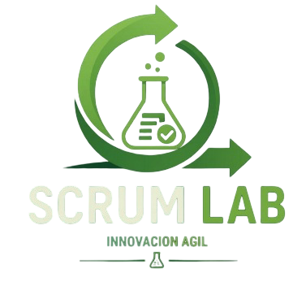

Conocé los conceptos, procesos y metodologías que permiten desarrollar software de calidad.
EXPLORÁ TODAS LAS SECCIONES
Metodologías ágiles
- Scrum
- Kanban
Procesos de desarrollo
- Ciclo de Vida del Software
- Modelos Tradicionales
- Metodologías Ágiles
Sistema de gestión de calidad
- Fundamentos
- Técnicas de Aseguramiento
- Herramientas de Calidad
Recursos y aprendizaje
- Glosario
- Preguntas Frecuentes
- Enlaces de Interés
- Ejercicios y Casos Prácticos
Encuesta de preferencias metodológicas
Respondé algunas preguntas y obtené una sugerencia según las características de un proyecto.
Comparador de metodologías
Compará las características de distintas metodologías.
Sobre nosotros
- Nuestro equipo
- Contactos